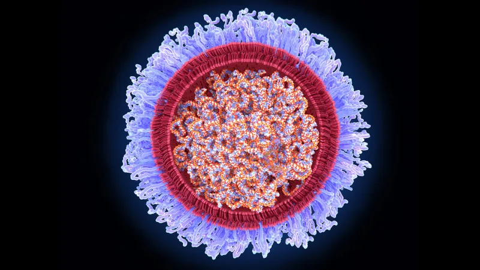

Early mRNA research that led to COVID-19 vaccines wins 2023 medicine Nobel Prize
Two scientists who laid the groundwork for what would become among the most influential vaccines of all time have been awarded the 2023 Nobel Prize in medicine or physiology.
Biochemist Katalin Karikó, now at the University of Szeged in Hungary, and Drew Weissman of the University of Pennsylvania were honored for their research on modifications of mRNA that made the first vaccines against COVID-19 possible (SN: 12/15/21).
“Everybody has experienced the COVID-19 pandemic that affects our life, economy and public health. It was a traumatic event,” said Qiang Pan-Hammarström, a member of the Nobel Assembly at the Karolinska Institute in Stockholm, which awards the medicine or physiology prize. Her remarks came on October 2 after a news briefing to announce the winners. “You probably don’t need to emphasize more that the basic discovery made by the laureates has made a huge impact on our society.”
As of September 2023, more than 13.5 billion COVID-19 vaccine doses — including mRNA vaccines as well as other kinds of shots — had been administered since they first became available in December 2020, according to the World Health Organization. In the year after their introduction, the shots are estimated to have saved nearly 20 million lives globally. In the United States, where mRNA COVID-19 shots made by Moderna and Pfizer/BioNTech accounted for the vast majority of vaccinations, the vaccines are estimated to have prevented 1.1 million additional deaths and 10.3 million hospitalizations.
A different kind of vaccine
RNA is DNA’s lesser-known chemical cousin. Cells make RNA copies of genetic instructions contained in DNA. Some of those RNA copies, known as messenger RNA, or mRNA, are used to build proteins. Messenger RNA “literally tells your cells what proteins to make,” says Kizzmekia Corbett-Helaire, a viral immunologist at the Harvard T. H. Chan School of Public Health in Boston. Proteins do much of the important work that keeps cells, and the organisms they’re a part of, alive and well.
The mRNA vaccines work a bit differently than traditional immunizations. Most traditional vaccines use viruses or bacteria — either weakened or killed — or proteins from those pathogens to provoke the immune system into making protective antibodies and other defenses against future infections.
The COVID-19 vaccines made by Pfizer/BioNTech and Moderna instead contain mRNA that carries instructions for making one of the coronavirus’s proteins (SN: 2/21/20). When a person gets an mRNA shot, the genetic material gets into their cells and triggers the cells to produce the viral protein for a short amount of time. When the immune system sees the viral protein, it builds defenses to prevent serious illness if the person later gets infected with the coronavirus.
Vaccines using mRNA were a good choice to combat the pandemic, Corbett-Helaire says. The technology allows scientists to “skip that step of making large amounts of proteins in the laboratory and instead … tell the body to do things that the body already does, except now we make an extra protein,” she says.
In addition to protecting people from the coronavirus, mRNA vaccines may also work against other infectious diseases and cancer. Scientists might also use the technology to help people with certain rare genetic diseases make enzymes or other proteins they lack. Clinical trials are under way for many of these uses, but it could take years before scientists know the results (SN: 12/17/21).
A long time coming
In 1997, Karikó and Weissman met at the copy machine, Karikó said during a news conference October 2 at the University of Pennsylvania. She told him about her work with RNA, and he shared his interest in vaccines. Although housed in separate buildings, the researchers worked together to solve one fundamental problem that could have derailed mRNA vaccines and therapies: Pumping regular mRNA into the body gets the immune system riled up in bad ways, producing a flood of immune chemicals called cytokines. Those chemicals can trigger damaging inflammation. And this unmodified mRNA produces very little protein in the body.
The researchers found that swapping the RNA building block uridine for modified versions, first pseudouridine and then N1-methylpseudouridine, could dampen the bad immune reaction. That nifty chemistry, first reported in 2005, allowed researchers to rein in the immune response and safely deliver the mRNA to cells.
“The messenger RNA has to hide and it has to go unnoticed by our bodies, which are very brilliant at destroying things that are foreign,” Corbett-Helaire says. “The modifications that [Karikó and Weissman] worked on for a number of years really were fundamental to allowing the mRNA therapeutics to hide while also being very helpful to the body.”
In addition, the modified mRNA produced lots of protein that could spark an immune response, the team showed in 2008 and 2010. It was this work on modifying mRNA building blocks that the prize honors.
For years, “we couldn’t get people to notice RNA as something interesting,” Weissman said at the Penn news conference. Vaccines using the technology failed clinical trials in the early 1990s, and most researchers gave up. But Karikó “lit the match,” and they spent the next 20 years figuring out how to get it to work, Weissman said. “We would sit together in 1997 and afterwards and talk about all the things that we thought RNA could do, all of the vaccines and therapeutics and gene therapies, and just realizing how important it had the potential to be. That’s why we never gave up.”
In 2006, Karikó and Weissman started a company called RNARx to develop mRNA-based treatments and vaccines. After Karikó joined the German company BioNTech in 2013, she and Weissman continued to collaborate. They and colleagues reported in 2015 that encasing mRNA in bubbles of lipids could help the fragile RNA get into cells without getting broken down in the body. The researchers were developing a Zika vaccine when the pandemic hit, and quickly applied what they had learned toward containing the coronavirus.
The duo’s work was not always so celebrated. Thomas Perlmann, Secretary General of the Nobel Assembly at the Karolinska Institute, asked the newly minted laureates whether they were surprised to have won. He said that Karikó was overwhelmed, noting that just 10 years ago she was terminated from her job and had to move to Germany without her family to get another position. She never won a grant from the U.S. National Institutes of Health to support her work.
“She struggled and didn’t get recognition for the importance of her vision,” Perlmann said, but she had a passion for using mRNA therapeutically. “She resisted the temptation to sort of go away from that path and do something maybe easier.” Karikó is the 61st woman to win a Nobel Prize since 1901, and the 13th to be awarded a prize in physiology and medicine.
Though it often takes decades before the Nobel committees recognize a discovery, sometimes recognition comes relatively swiftly. For instance, Emmanuelle Charpentier and Jennifer Doudna won the Nobel Prize for chemistry in 2020 a mere eight years after the researchers published a description of the genetic scissors CRISPR/Cas 9 (SN: 10/7/20).
“I never expected in my entire life to get the Nobel Prize,” Weissman said, especially not a mere three years after the vaccines demonstrated their medical importance. Perlmann told him the Nobel committee was seeking to be “more current” with its awards, he said.
The timely Nobel highlights that “there are just a million other possibilities for messenger RNA therapeutics … beyond the vaccines,” Corbett-Helaire says. The researchers said at the Penn news conference that they weren’t sure the early morning phone call from Perlmann was real. On the advice of Weissman’s daughter, they waited for the Nobel announcement. “We sat in bed. [I was] looking at my wife, and my cat is begging for food,” he said. “We wait, and the press conference starts, and it was real. So that’s when we really became excited.”Karikó and Weissman will share the prize of 11 million Swedish kronor, or roughly $1 million.